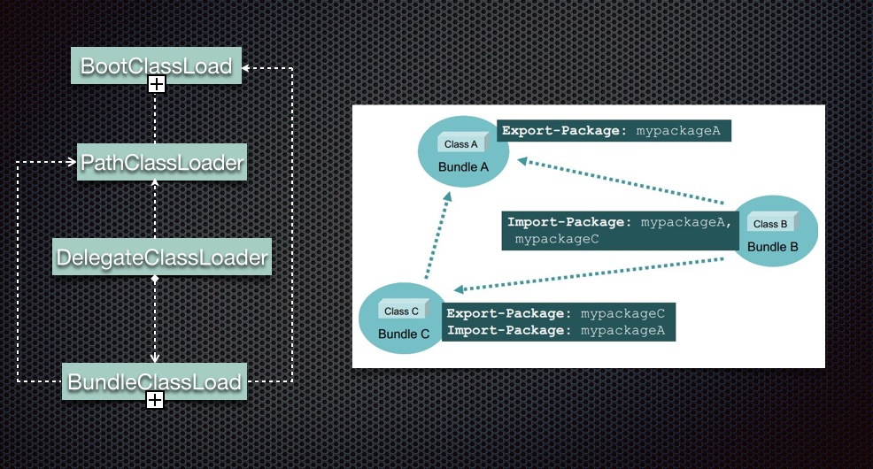
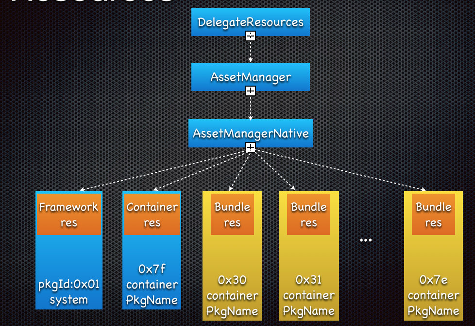

<!DOCTYPE HTML>
<html lang="" >
    <head>
        <meta charset="UTF-8">
        <meta content="text/html; charset=utf-8" http-equiv="Content-Type">
        <title>框架原理 · GitBook</title>
        <meta http-equiv="X-UA-Compatible" content="IE=edge" />
        <meta name="description" content="">
        <meta name="generator" content="GitBook 3.2.2">
        
        
        
    
    <link rel="stylesheet" href="../gitbook/style.css">

    
            
                
                <link rel="stylesheet" href="../gitbook/gitbook-plugin-highlight/website.css">
                
            
                
                <link rel="stylesheet" href="../gitbook/gitbook-plugin-search/search.css">
                
            
                
                <link rel="stylesheet" href="../gitbook/gitbook-plugin-fontsettings/website.css">
                
            
        

    

    
        
    
        
    
        
    
        
    
        
    
        
    

        
    
    
    <meta name="HandheldFriendly" content="true"/>
    <meta name="viewport" content="width=device-width, initial-scale=1, user-scalable=no">
    <meta name="apple-mobile-web-app-capable" content="yes">
    <meta name="apple-mobile-web-app-status-bar-style" content="black">
    <link rel="apple-touch-icon-precomposed" sizes="152x152" href="../gitbook/images/apple-touch-icon-precomposed-152.png">
    <link rel="shortcut icon" href="../gitbook/images/favicon.ico" type="image/x-icon">

    
    <link rel="next" href="Project_architectured.html" />
    
    

    </head>
    <body>
        
<div class="book">
    <div class="book-summary">
        
            
<div id="book-search-input" role="search">
    <input type="text" placeholder="Type to search" />
</div>

            
                <nav role="navigation">
                


<ul class="summary">
    
    

    

    
        
        
    
        <li class="chapter " data-level="1.1" data-path="../">
            
                <a href="../">
            
                    
                    Introduction
            
                </a>
            

            
        </li>
    
        <li class="chapter " data-level="1.2" >
            
                <span>
            
                    
                    原理解析
            
                </span>
            

            
            <ul class="articles">
                
    
        <li class="chapter active" data-level="1.2.1" data-path="Runtime_principle.html">
            
                <a href="Runtime_principle.html">
            
                    
                    框架原理
            
                </a>
            

            
        </li>
    
        <li class="chapter " data-level="1.2.2" data-path="Project_architectured.html">
            
                <a href="Project_architectured.html">
            
                    
                    名词解释
            
                </a>
            

            
        </li>
    
        <li class="chapter " data-level="1.2.3" data-path="Apk_architecture.html">
            
                <a href="Apk_architecture.html">
            
                    
                    APK结构
            
                </a>
            

            
        </li>
    
        <li class="chapter " data-level="1.2.4" data-path="File_architecture_runtime.html">
            
                <a href="File_architecture_runtime.html">
            
                    
                    运行期文件结构
            
                </a>
            

            
        </li>
    

            </ul>
            
        </li>
    
        <li class="chapter " data-level="1.3" data-path="../guide-for-use/">
            
                <a href="../guide-for-use/">
            
                    
                    接入指引
            
                </a>
            

            
            <ul class="articles">
                
    
        <li class="chapter " data-level="1.3.1" data-path="../guide-for-use/guide_for_build.html">
            
                <a href="../guide-for-use/guide_for_build.html">
            
                    
                    容器接入
            
                </a>
            

            
        </li>
    
        <li class="chapter " data-level="1.3.2" data-path="../guide-for-use/guide_for_bundle.html">
            
                <a href="../guide-for-use/guide_for_bundle.html">
            
                    
                    bundle拆分|新建
            
                </a>
            

            
        </li>
    
        <li class="chapter " data-level="1.3.3" data-path="../guide-for-use/guide_for_compile.html">
            
                <a href="../guide-for-use/guide_for_compile.html">
            
                    
                    awo编译
            
                </a>
            

            
        </li>
    
        <li class="chapter " data-level="1.3.4" data-path="../guide-for-use/bundleCommunicate.html">
            
                <a href="../guide-for-use/bundleCommunicate.html">
            
                    
                    跨bundle的代码重用和通信
            
                </a>
            

            
        </li>
    

            </ul>
            
        </li>
    
        <li class="chapter " data-level="1.4" data-path="../update/">
            
                <a href="../update/">
            
                    
                    动态部署
            
                </a>
            

            
            <ul class="articles">
                
    
        <li class="chapter " data-level="1.4.1" data-path="../update/principle.html">
            
                <a href="../update/principle.html">
            
                    
                    技术原理
            
                </a>
            

            
        </li>
    
        <li class="chapter " data-level="1.4.2" data-path="../update/dexpatch.html">
            
                <a href="../update/dexpatch.html">
            
                    
                    dexpatch
            
                </a>
            

            
        </li>
    
        <li class="chapter " data-level="1.4.3" data-path="../update/dexpatch_use_guide.html">
            
                <a href="../update/dexpatch_use_guide.html">
            
                    
                    dexpatch使用教程
            
                </a>
            

            
        </li>
    
        <li class="chapter " data-level="1.4.4" data-path="../update/guide.html">
            
                <a href="../update/guide.html">
            
                    
                    一些限制
            
                </a>
            

            
        </li>
    

            </ul>
            
        </li>
    
        <li class="chapter " data-level="1.5" >
            
                <span>
            
                    
                    FAQ
            
                </span>
            

            
            <ul class="articles">
                
    
        <li class="chapter " data-level="1.5.1" data-path="../faq/question.html">
            
                <a href="../faq/question.html">
            
                    
                    问答
            
                </a>
            

            
        </li>
    
        <li class="chapter " data-level="1.5.2" data-path="../faq/help.html">
            
                <a href="../faq/help.html">
            
                    
                    故障排查
            
                </a>
            

            
        </li>
    
        <li class="chapter " data-level="1.5.3" data-path="../faq/variant.html">
            
                <a href="../faq/variant.html">
            
                    
                    构建定制包
            
                </a>
            

            
        </li>
    
        <li class="chapter " data-level="1.5.4" data-path="../faq/dynamic_failed_help.html">
            
                <a href="../faq/dynamic_failed_help.html">
            
                    
                    动态部署失败排查指南
            
                </a>
            

            
        </li>
    

            </ul>
            
        </li>
    
        <li class="chapter " data-level="1.6" >
            
                <span>
            
                    
                    源码分析
            
                </span>
            

            
            <ul class="articles">
                
    
        <li class="chapter " data-level="1.6.1" data-path="../code_read/atlas_gradle_apk/atlas_atlas_gradle_apk.html">
            
                <a href="../code_read/atlas_gradle_apk/atlas_atlas_gradle_apk.html">
            
                    
                    Atlas之Gradle配置
            
                </a>
            

            
        </li>
    
        <li class="chapter " data-level="1.6.2" data-path="../code_read/atlas_start/atlas_start_1.html">
            
                <a href="../code_read/atlas_start/atlas_start_1.html">
            
                    
                    Atlas之启动过程(一)
            
                </a>
            

            
        </li>
    
        <li class="chapter " data-level="1.6.3" data-path="../code_read/atlas_start/atlas_start_2.html">
            
                <a href="../code_read/atlas_start/atlas_start_2.html">
            
                    
                    Atlas之启动过程(二)
            
                </a>
            

            
        </li>
    
        <li class="chapter " data-level="1.6.4" data-path="../code_read/atlas_bundle_load/atlas_bundle_load.html">
            
                <a href="../code_read/atlas_bundle_load/atlas_bundle_load.html">
            
                    
                    Atlas之Bundle加载过程
            
                </a>
            

            
        </li>
    

            </ul>
            
        </li>
    

    

    <li class="divider"></li>

    <li>
        <a href="https://www.gitbook.com" target="blank" class="gitbook-link">
            Published with GitBook
        </a>
    </li>
</ul>


                </nav>
            
        
    </div>

    <div class="book-body">
        
            <div class="body-inner">
                
                    

<div class="book-header" role="navigation">
    

    <!-- Title -->
    <h1>
        <i class="fa fa-circle-o-notch fa-spin"></i>
        <a href=".." >框架原理</a>
    </h1>
</div>


                    <div class="page-wrapper" tabindex="-1" role="main">
                        <div class="page-inner">
                            
<div id="book-search-results">
    <div class="search-noresults">
    
                                <section class="normal markdown-section">
                                
                                <h2 id="&#x5BB9;&#x5668;&#x6846;&#x67B6;">&#x5BB9;&#x5668;&#x6846;&#x67B6;</h2>
<p>&gt;
</p>
<p>&#x5982;&#x4E0A;&#x56FE;&#x6240;&#x793A;&#xFF0C;atlas&#x4E3B;&#x8981;&#x5206;&#x4E3A;&#x4EE5;&#x4E0B;&#x51E0;&#x4E2A;&#x5C42;&#x7EA7;&#xFF1A;</p>
<ol>
<li><p>&#x6700;&#x5E95;&#x4E0B;&#x7684;hack&#x5DE5;&#x5177;&#x5C42;&#xFF1A;
&#x5305;&#x62EC;&#x4E86;&#x5BB9;&#x5668;&#x6240;&#x9700;&#x7684;&#x6240;&#x6709;&#x7CFB;&#x7EDF;&#x5C42;&#x9762;&#x7684;&#x6CE8;&#x5165;&#x548C;hack&#x7684;&#x5DE5;&#x5177;&#x7C7B;&#x521D;&#x59CB;&#x5316;&#x548C;&#x6821;&#x9A8C;&#xFF0C;&#x5BB9;&#x5668;&#x542F;&#x52A8;&#x65F6;&#x5148;&#x6821;&#x9A8C;&#x8BBE;&#x5907;&#x662F;&#x5426;&#x652F;&#x6301;&#x5BB9;&#x5668;&#x8FD0;&#x884C;&#xFF0C;&#x4E0D;&#x652F;&#x6301;&#x5219;&#x91C7;&#x53D6;&#x964D;&#x7EA7;&#x5E76;&#x8BB0;&#x5F55;&#x539F;&#x56E0;&#xFF1B; </p>
</li>
<li><p>Bundle Framework &#x8D1F;&#x8D23;bundle&#x7684;&#x5B89;&#x88C5; &#x66F4;&#x65B0; &#x64CD;&#x4F5C;&#x4EE5;&#x53CA;&#x7BA1;&#x7406;&#x6574;&#x4E2A;bundle&#x7684;&#x751F;&#x547D;&#x5468;&#x671F;&#xFF1B;</p>
</li>
<li><p>runtime&#x5C42;&#xFF1A;&#x4E3B;&#x8981;&#x5305;&#x62EC;&#x6E05;&#x5355;&#x7BA1;&#x7406;&#x3001;&#x7248;&#x672C;&#x7BA1;&#x7406;&#x3001;&#x4EE5;&#x53CA;&#x7CFB;&#x7EDF;&#x4EE3;&#x7406;&#x4E09;&#x5927;&#x5757;&#xFF0C;&#x57FA;&#x4E8E;&#x4E0D;&#x540C;&#x7684;&#x89E6;&#x53D1;&#x70B9;&#x6309;&#x9700;&#x6267;&#x884C;bundle&#x7684;&#x5B89;&#x88C5;&#x548C;&#x52A0;&#x8F7D;&#xFF1B;runtime&#x5C42;&#x540C;&#x65F6;&#x63D0;&#x4F9B;&#x4E86;&#x5F00;&#x53D1;&#x671F;&#x5FEB;&#x901F;debug&#x652F;&#x6301;&#x548C;&#x76D1;&#x63A7;&#x4E24;&#x4E2A;&#x529F;&#x80FD;&#x6A21;&#x5757;&#x3002;&#x4ECE;Delegate&#x5C42;&#x53EF;&#x4EE5;&#x770B;&#x5230;&#xFF0C;&#x6700;&#x6838;&#x5FC3;&#x7684;&#x4E24;&#x4E2A;&#x4EE3;&#x7406;&#x70B9;&#xFF1A;&#x4E00;&#x4E2A;&#x662F;DelegateClassLoader&#xFF1A;&#x8D1F;&#x8D23;&#x8DEF;&#x7531;class&#x52A0;&#x8F7D;&#x5230;&#x5404;&#x4E2A;bundle&#x5185;&#x90E8;&#xFF0C;&#x7B2C;&#x4E8C;&#x4E2A;&#x662F;DelegateResource&#xFF1A;&#x8D1F;&#x8D23;&#x8D44;&#x6E90;&#x67E5;&#x627E;&#x65F6;&#x80FD;&#x591F;&#x627E;&#x5230;bundle&#x5185;&#x7684;&#x8D44;&#x6E90;&#xFF1B;&#x8FD9;&#x662F;bundle&#x80FD;&#x591F;&#x771F;&#x6B63;&#x8FD0;&#x884C;&#x8D77;&#x6765;&#x7684;&#x6839;&#x672C;&#xFF1B;&#x5176;&#x4F59;&#x7684;&#x4EE3;&#x7406;&#x70B9;&#x5747;&#x662F;&#x4E3A;&#x4E86;&#x4FDD;&#x8BC1;&#x5728;&#x5FC5;&#x8981;&#x7684;&#x65F6;&#x673A;&#x6309;&#x9700;&#x52A0;&#x8F7D;&#x8D77;&#x6765;&#x76EE;&#x6807;bundle&#xFF0C;&#x8BA9;&#x5176;&#x53EF;&#x4EE5;&#x88AB;DelegateClassloader&#x548C;DelegateResource&#x4F7F;&#x7528;</p>
</li>
<li><p>&#x5BF9;&#x5916;&#x63A5;&#x5165;&#x5C42;:AtlasBridgeApplication&#x662F;atlas&#x6846;&#x67B6;&#x4E0B;apk&#x7684;&#x771F;&#x6B63;Application&#xFF0C;&#x5728;&#x57FA;&#x4E8E;Atlas&#x6846;&#x67B6;&#x6784;&#x5EFA;&#x7684;&#x8FC7;&#x7A0B;&#x4E2D;&#x4F1A;&#x66FF;&#x6362;&#x539F;&#x6709;manifest&#x4E2D;&#x7684;application&#xFF0C;&#x6240;&#x4EE5;Atlas&#x6CA1;&#x5165;&#x7684;&#x63A5;&#x5165;&#x5E76;&#x4E0D;&#x5B58;&#x5728;&#x4EFB;&#x4F55;&#x521D;&#x59CB;&#x5316;&#x4EE3;&#x7801;&#xFF0C;&#x6784;&#x5EFA;&#x811A;&#x672C;&#x5B8C;&#x6210;&#x4E86;&#x63A5;&#x5165;&#x7684;&#x8FC7;&#x7A0B;&#x3002;AtlasBridgeApplication&#x91CC;&#x9762;&#x9664;&#x4E86;&#x5B8C;&#x6210;&#x4E86;Atlas&#x7684;&#x521D;&#x59CB;&#x5316;&#x529F;&#x80FD;&#xFF0C;&#x540C;&#x65F6;<strong>&#x5185;&#x7F6E;&#x4E86;multidex&#x7684;&#x529F;&#x80FD;</strong>&#xFF0C;&#x8FD9;&#x6837;&#x505A;&#x7684;&#x539F;&#x56E0;&#x6709;&#x4E24;&#x4E2A;&#xFF1A;</p>
<ol>
<li>&#x5F88;&#x591A;&#x5927;&#x578B;&#x7684;app&#x4E0D;&#x5408;&#x7406;&#x7684;&#x521D;&#x59CB;&#x5316;&#x5BFC;&#x81F4;&#x7528;multidex&#x5206;&#x5305;&#x903B;&#x8F91;&#x62C6;&#x5206;&#x7684;&#x65F6;&#x5019;&#x4E3B;dex&#x7684;&#x4EE3;&#x7801;&#x5C31;&#x6709;&#x53EF;&#x80FD;&#x65B9;&#x6CD5;&#x6570;&#x8D85;&#x8FC7;65536&#xFF0C;AtlasBridgeApplication&#x4E0E;&#x4E1A;&#x52A1;&#x4EE3;&#x7801;&#x5B8C;&#x5168;&#x89E3;&#x8026;&#xFF0C;&#x6240;&#x4EE5;&#x62C6;&#x5206;&#x4E0A;&#x9762;&#x53EA;&#x8981;&#x4FDD;&#x8BC1;atlas&#x6846;&#x67B6;&#x5728;&#x4E3B;dex&#xFF0C;&#x5176;&#x4ED6;&#x4EE3;&#x7801;&#x65E0;&#x8BBA;&#x600E;&#x4E48;&#x62C6;&#x5206;&#x90FD;&#x4E0D;&#x4F1A;&#x6709;&#x95EE;&#x9898;&#xFF1B;</li>
<li>&#x5982;&#x679C;&#x4E0D;&#x66FF;&#x6362;Application&#xFF0C;&#x90A3;&#x4E48;atlas&#x7684;&#x521D;&#x59CB;&#x5316;&#x5C31;&#x4F1A;&#x5728;application&#x91CC;&#x9762;&#xFF0C;&#x7531;&#x4E8E;&#x57FA;&#x4E8E;Atlas&#x7684;&#x52A8;&#x6001;&#x90E8;&#x7F72;&#x5B9E;&#x9645;&#x4E0A;&#x662F;&#x7C7B;&#x66FF;&#x6362;&#x7684;&#x673A;&#x5236;&#xFF0C;&#x90A3;&#x4E48;&#x8FD9;&#x79CD;&#x673A;&#x5236;&#x5C31;&#x4F1A;&#x5FC5;&#x7136;&#x5B58;&#x5728;&#x5305;&#x62EC;Application&#x53CA;&#x5176;import&#x7684;class&#x7B49;&#x90E8;&#x5206;&#x4EE3;&#x7801;&#x5728;dalvik&#x4E0D;&#x652F;&#x6301;&#x90E8;&#x7F72;&#x7684;&#x60C5;&#x51B5;&#xFF0C;&#x8FD9;&#x4E2A;&#x5728;&#x4F7F;&#x7528;&#x8FC7;&#x7A0B;&#x4E2D;&#x9020;&#x6210;&#x4E00;&#x5B9A;&#x6210;&#x672C;&#xFF0C;&#x9700;&#x8981;&#x5C0F;&#x5FC3;&#x7684;&#x4F7F;&#x7528;&#x4EE5;&#x907F;&#x514D;dalivk&#x5185;&#x90E8;class resolve&#x673A;&#x5236;&#x5BFC;&#x81F4;&#x90E8;&#x5206;class&#x6CA1;&#x6210;&#x529F;&#xFF0C;&#x66FF;&#x6362;&#x4EE5;&#x540E;&#x8BE5;&#x95EE;&#x9898;&#x5F97;&#x5230;&#x6700;&#x597D;&#x7684;&#x89E3;&#x51B3;&#xFF0C;&#x9664;atlas&#x672C;&#x8EAB;&#x4EE5;&#x5916;&#xFF0C;&#x6240;&#x6709;&#x4E1A;&#x52A1;&#x4EE3;&#x7801;&#x5747;&#x53EF;&#x4EE5;&#x52A8;&#x6001;&#x90E8;&#x7F72;&#xFF1B;</li>
</ol>
</li>
</ol>
<p>&#x53E6;&#x5916;&#x5185;&#x7F6E;&#x7684;&#x539F;&#x751F;&#x7684;multidex&#x5728;dalvik&#x4E0A;&#x9762;&#x6027;&#x80FD;&#x5E76;&#x4E0D;&#x597D;&#xFF0C;atlas&#x5185;&#x90E8;&#x5BF9;&#x5176;&#x8FDB;&#x884C;&#x4E86;&#x4F18;&#x5316;&#x63D0;&#x9AD8;&#x4E86;&#x5728;dalvik&#x4E0A;&#x9762;&#x7684;&#x4F53;&#x9A8C;&#x3002;</p>
<p>&#x9664;AtlasBridgeApplication&#x4E4B;&#x5916;&#xFF0C;&#x63A5;&#x5165;&#x5C42;&#x5BF9;&#x5916;&#x63D0;&#x4F9B;&#x4E86;&#x90E8;&#x5206;&#x5DE5;&#x5177;&#x7C7B;&#xFF0C;&#x5305;&#x62EC;&#x4E3B;&#x52A8;install bundle&#xFF0C;start bundle&#xFF0C;&#x4EE5;&#x53CA;&#x83B7;&#x53D6;&#x5168;&#x5C40;&#x7684;application&#x7B49;&#x5404;&#x79CD;&#x529F;&#x80FD;&#x3002;</p>
<h2 id="bundle&#x751F;&#x547D;&#x5468;&#x671F;">Bundle&#x751F;&#x547D;&#x5468;&#x671F;</h2>
<p>&#x6BCF;&#x4E2A;bundle&#x7684;&#x751F;&#x547D;&#x5468;&#x671F;&#x5982;&#x4E0B;&#x56FE;&#x6240;&#x793A;&#xFF1A;
&gt;
</p>
<p><strong>Installed</strong>    bundle&#x88AB;&#x5B89;&#x88C5;&#x5230;storage&#x76EE;&#x5F55;</p>
<p><strong>Resolved</strong>  classloader&#x88AB;&#x521B;&#x5EFA;&#xFF0C;assetpatch&#x6CE8;&#x5165;DelegateResoucces</p>
<p><strong>Active</strong>     bundle&#x7684;&#x5B89;&#x5168;&#x6821;&#x9A8C;&#x901A;&#x8FC7;&#xFF1B;bundle&#x7684;dex&#x68C0;&#x6D4B;&#x5DF2;&#x7ECF;&#x6210;&#x529F;dexopt(or dex2oat)&#xFF0C;resource&#x5DF2;&#x7ECF;&#x6210;&#x529F;&#x6CE8;&#x5165;</p>
<p><strong>Started</strong>  bundle&#x5F00;&#x59CB;&#x8FD0;&#x884C;&#xFF0C;bundle application&#x7684;onCreate&#x65B9;&#x6CD5;&#x88AB;&#x8C03;&#x7528;</p>
<h2 id="&#x7C7B;&#x52A0;&#x8F7D;&#x673A;&#x5236;">&#x7C7B;&#x52A0;&#x8F7D;&#x673A;&#x5236;</h2>
<p>Atlas&#x91CC;&#x9762;&#x901A;&#x5E38;&#x4F1A;&#x521B;&#x5EFA;&#x4E86;&#x4E24;&#x79CD;classLoader,&#x7B2C;&#x4E00;&#x4E2A;&#x662F;DelegateClassLoader&#xFF0C;&#x4ED6;&#x4F5C;&#x4E3A;&#x7C7B;&#x67E5;&#x627E;&#x7684;&#x4E00;&#x4E2A;&#x8DEF;&#x7531;&#x5668;&#x800C;&#x5B58;&#x5728;&#xFF0C;&#x672C;&#x8EAB;&#x5E76;&#x4E0D;&#x8D1F;&#x8D23;&#x771F;&#x6B63;&#x7C7B;&#x7684;&#x52A0;&#x8F7D;&#xFF1B;DelegateClassLoader&#x542F;&#x52A8;&#x65F6;&#x88AB;atlas&#x6CE8;&#x5165;LoadedApk&#x4E2D;&#xFF0C;&#x66FF;&#x6362;&#x539F;&#x6709;&#x7684;PathClassLoader&#xFF1B;&#x7B2C;&#x4E8C;&#x4E2A;&#x662F;BundleClassLoader&#xFF0C;&#x53C2;&#x8003;OSGI&#x7684;&#x5B9E;&#x73B0;&#xFF0C;&#x6BCF;&#x4E2A;bundle resolve&#x65F6;&#x4F1A;&#x5206;&#x914D;&#x4E00;&#x4E2A;BundleClassLoader&#xFF0C;&#x8D1F;&#x8D23;&#x8BE5;bundle&#x7684;&#x7C7B;&#x52A0;&#x8F7D;&#x3002;&#x5173;&#x7CFB;&#x5982;&#x4E0B;&#x56FE;&#x6240;&#x793A;&#xFF1A;
<strong>DelegateClassLoader&#x4EE5;PathClassLoader&#x4E3A;parent&#xFF0C;&#x540C;&#x65F6;&#x5728;&#x8DEF;&#x7531;&#x8FC7;&#x7A0B;&#x4E2D;&#x80FD;&#x591F;&#x627E;&#x5230;&#x6240;&#x6709;bundle&#x7684;classloader&#xFF1B;</strong></p>
<p><strong>BundleClassLoader&#x4EE5;BootClassLoader&#x4E3A;parent&#xFF0C;&#x540C;&#x65F6;&#x5F15;&#x7528;PathClassLoader,BundleClassLoader&#x81EA;&#x8EAB;findClass&#x7684;&#x987A;&#x5E8F;&#x4E3A;</strong></p>
<p>  <strong>1. findOwn&#xFF1A; &#x67E5;&#x627E;bundle dex &#x81EA;&#x8EAB;&#x5185;&#x90E8;&#x7684;class</strong></p>
<p>  <strong>2. findDependency: &#x67E5;&#x627E;bundle&#x4F9D;&#x8D56;&#x7684;bundle&#x5185;&#x7684;class</strong></p>
<p>  <strong>3. findPath&#xFF1A; &#x67E5;&#x627E;&#x4E3B;apk&#x4E2D;&#x7684;class</strong></p>
<p>&gt;
</p>
<h4 id="&#x8303;&#x4F8B;">&#x8303;&#x4F8B;</h4>
<p>&#x4E0B;&#x56FE;&#x662F;&#x5BB9;&#x5668;&#x4E2D;&#x7C7B;&#x52A0;&#x8F7D;&#x7684;&#x5927;&#x81F4;&#x987A;&#x5E8F;&#xFF1B;
&#x53EF;&#x4EE5;&#x8BA4;&#x4E3A;&#x662F;&#x4E00;&#x4E2A;Bundle&#x7684;Activity&#x542F;&#x52A8;&#x7684;&#x7C7B;&#x52A0;&#x8F7D;&#x8FC7;&#x7A0B;&#x6765;&#x5E2E;&#x52A9;&#x7406;&#x89E3;&#xFF08;&#x5047;&#x8BBE;Activity&#x6240;&#x5728;&#x7684;bundle&#x5DF2;&#x7ECF;&#x5B89;&#x88C5;&#xFF09;&#xFF1B;</p>
<ol>
<li>ActivityThread&#x4ECE;LoadedApk&#x4E2D;&#x83B7;&#x53D6;classloader&#x53BB;load Activity Class&#xFF1B;</li>
<li>&#x6839;&#x636E;&#x4E0A;&#x9762;&#x7684;classloader&#x5173;&#x7CFB;&#xFF0C;&#x5148;&#x53BB;parent&#x91CC;&#x9762;&#x52A0;&#x8F7D;class&#xFF1B;</li>
<li>&#x7531;&#x4E8E;class&#x5728;bundle&#x91CC;&#x9762;&#xFF0C;&#x6240;&#x4EE5;pathclassloader&#x5185;&#x67E5;&#x627E;&#x5931;&#x8D25;&#xFF0C;&#x63A5;&#x7740;delegateclassloader&#x6839;&#x636E;bundleinfo&#x4FE1;&#x606F;&#x67E5;&#x627E;&#x5230;classloader&#x5728;bundle&#x4E2D;&#xFF08;&#x5047;&#x8BBE;&#x4E3A;bundleA&#xFF09;&#xFF1B;</li>
<li>&#x4ECE;bundleA&#x4E2D;&#x52A0;&#x8F7D;class&#xFF0C;&#x5E76;&#x4E14;&#x521B;&#x5EFA;class&#xFF1B;</li>
<li>&#x540E;&#x9762;&#x5728;Activity&#x8D77;&#x6765;&#x540E;&#xFF0C;&#x5982;&#x679C;bundleA&#x5BF9;bundleB&#x6709;&#x4F9D;&#x8D56;&#x5173;&#x7CFB;&#xFF0C;&#x90A3;&#x4E48;&#x5982;&#x679C;&#x7528;&#x5230;&#x4E86;bundleB&#x7684;class&#xFF0C;&#x53C8;&#x4F1A;&#x6839;&#x636E;bundlA&#x7684;bundleClassloader&#x7684;dependency&#x53BB;&#x83B7;&#x53D6;bundleB&#x7684;classloader&#x53BB;&#x52A0;&#x8F7D;&#xFF1B;
</li>
</ol>
<h2 id="&#x8D44;&#x6E90;&#x52A0;&#x8F7D;&#x673A;&#x5236;">&#x8D44;&#x6E90;&#x52A0;&#x8F7D;&#x673A;&#x5236;</h2>
<p>&gt;
</p>
<p>&#x7C7B;&#x4F3C;ClassLoader&#xFF0C;LoadedApk&#x4E2D;&#x7684;Resources&#x88AB;&#x66FF;&#x6362;&#x6210;Atlas&#x5185;&#x90E8;&#x7684;DelegateResources,&#x540C;&#x65F6;&#x5728;&#x6BCF;&#x4E2A;Bundle&#x5B89;&#x88C5;&#x7684;&#x8FC7;&#x7A0B;&#x4E2D;&#xFF0C;&#x6BCF;&#x4E2A;bundle&#x7684;assetspath&#x4F1A;&#x88AB;&#x66F4;&#x65B0;&#x5230;DelegateResources&#x7684;AssetsManager&#x4E2D;&#xFF1B;&#x6BCF;&#x4E2A;bundle&#x7684;&#x8D44;&#x6E90;&#x7279;&#x5F81;&#x5982;&#x56FE;&#x53EF;&#x77E5;&#xFF1A;</p>
<ol>
<li>bundle&#x6784;&#x5EFA;&#x8FC7;&#x7A0B;&#x4E2D;&#xFF0C;&#x6BCF;&#x4E2A;bundle&#x4F1A;&#x88AB;&#x72EC;&#x7ACB;&#x8FDB;&#x884C;&#x5206;&#x533A;&#xFF0C;packageId&#x4FDD;&#x8BC1;&#x5168;&#x5C40;&#x552F;&#x4E00;&#xFF0C;packageID&#x5728;host&#x7684;&#x6784;&#x5EFA;&#x5DE5;&#x7A0B;&#x5185;&#x4F1A;&#x6709;&#x4E2A;<strong>packageIdFile.properties</strong>&#x8FDB;&#x884C;&#x7EDF;&#x4E00;&#x5206;&#x914D;&#xFF1B;</li>
<li>&#x867D;&#x7136;&#x6BCF;&#x4E2A;bundle&#x7684;manifest&#x90FD;&#x58F0;&#x660E;&#x4E86;&#x81EA;&#x5DF1;&#x7684;packagename&#xFF0C;&#x4F46;&#x662F;&#x5728;aapt&#x8FC7;&#x7A0B;&#x4E2D;&#xFF0C;arsc&#x6587;&#x4EF6;&#x91CC;&#x9762;&#x6240;&#x6709;bundle&#x7684;packagename&#x5747;&#x88AB;&#x7EDF;&#x4E00;&#x4E3A;hostApk&#x7684;package&#xFF0C;&#x6BD4;&#x5982;&#x5728;&#x624B;&#x6DD8;&#x5185;&#x5C31;&#x90FD;&#x662F;com.taobao.taobao&#xFF1B;&#x8FD9;&#x6837;&#x6539;&#x7684;&#x76EE;&#x7684;&#x662F;&#x4E3A;&#x4E86;&#x89E3;&#x51B3;&#x5728;&#x8D44;&#x6E90;&#x67E5;&#x627E;&#x4E2D;&#x4E00;&#x4E9B;&#x517C;&#x5BB9;&#x6027;&#x95EE;&#x9898;&#xFF1B; </li>
</ol>

                                
                                </section>
                            
    </div>
    <div class="search-results">
        <div class="has-results">
            
            <h1 class="search-results-title"><span class='search-results-count'></span> results matching "<span class='search-query'></span>"</h1>
            <ul class="search-results-list"></ul>
            
        </div>
        <div class="no-results">
            
            <h1 class="search-results-title">No results matching "<span class='search-query'></span>"</h1>
            
        </div>
    </div>
</div>

                        </div>
                    </div>
                
            </div>

            
                
                
                <a href="Project_architectured.html" class="navigation navigation-next navigation-unique" aria-label="Next page: 名词解释">
                    <i class="fa fa-angle-right"></i>
                </a>
                
            
        
    </div>

    <script>
        var gitbook = gitbook || [];
        gitbook.push(function() {
            gitbook.page.hasChanged({"page":{"title":"框架原理","level":"1.2.1","depth":2,"next":{"title":"名词解释","level":"1.2.2","depth":2,"path":"principle-intro/Project_architectured.md","ref":"principle-intro/Project_architectured.md","articles":[]},"previous":{"title":"原理解析","level":"1.2","depth":1,"ref":"","articles":[{"title":"框架原理","level":"1.2.1","depth":2,"path":"principle-intro/Runtime_principle.md","ref":"principle-intro/Runtime_principle.md","articles":[]},{"title":"名词解释","level":"1.2.2","depth":2,"path":"principle-intro/Project_architectured.md","ref":"principle-intro/Project_architectured.md","articles":[]},{"title":"APK结构","level":"1.2.3","depth":2,"path":"principle-intro/Apk_architecture.md","ref":"principle-intro/Apk_architecture.md","articles":[]},{"title":"运行期文件结构","level":"1.2.4","depth":2,"path":"principle-intro/File_architecture_runtime.md","ref":"principle-intro/File_architecture_runtime.md","articles":[]}]},"dir":"ltr"},"config":{"gitbook":"*","theme":"default","variables":{},"plugins":["livereload"],"pluginsConfig":{"livereload":{},"highlight":{},"search":{},"lunr":{"maxIndexSize":1000000,"ignoreSpecialCharacters":false},"sharing":{"facebook":true,"twitter":true,"google":false,"weibo":false,"instapaper":false,"vk":false,"all":["facebook","google","twitter","weibo","instapaper"]},"fontsettings":{"theme":"white","family":"sans","size":2},"theme-default":{"styles":{"website":"styles/website.css","pdf":"styles/pdf.css","epub":"styles/epub.css","mobi":"styles/mobi.css","ebook":"styles/ebook.css","print":"styles/print.css"},"showLevel":false}},"structure":{"langs":"LANGS.md","readme":"README.md","glossary":"GLOSSARY.md","summary":"SUMMARY.md"},"pdf":{"pageNumbers":true,"fontSize":12,"fontFamily":"Arial","paperSize":"a4","chapterMark":"pagebreak","pageBreaksBefore":"/","margin":{"right":62,"left":62,"top":56,"bottom":56}},"styles":{"website":"styles/website.css","pdf":"styles/pdf.css","epub":"styles/epub.css","mobi":"styles/mobi.css","ebook":"styles/ebook.css","print":"styles/print.css"}},"file":{"path":"principle-intro/Runtime_principle.md","mtime":"2017-09-12T02:32:41.000Z","type":"markdown"},"gitbook":{"version":"3.2.2","time":"2017-11-27T10:00:49.012Z"},"basePath":"..","book":{"language":""}});
        });
    </script>
</div>

        
    <script src="../gitbook/gitbook.js"></script>
    <script src="../gitbook/theme.js"></script>
    
        
        <script src="../gitbook/gitbook-plugin-livereload/plugin.js"></script>
        
    
        
        <script src="../gitbook/gitbook-plugin-search/search-engine.js"></script>
        
    
        
        <script src="../gitbook/gitbook-plugin-search/search.js"></script>
        
    
        
        <script src="../gitbook/gitbook-plugin-lunr/lunr.min.js"></script>
        
    
        
        <script src="../gitbook/gitbook-plugin-lunr/search-lunr.js"></script>
        
    
        
        <script src="../gitbook/gitbook-plugin-sharing/buttons.js"></script>
        
    
        
        <script src="../gitbook/gitbook-plugin-fontsettings/fontsettings.js"></script>
        
    

    </body>
</html>

